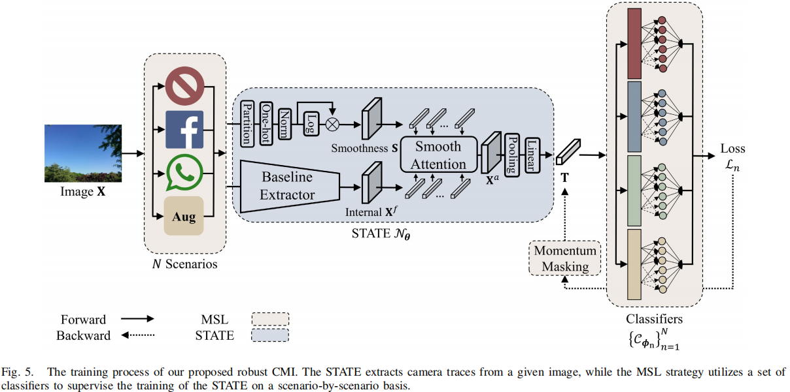
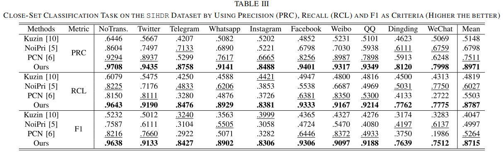
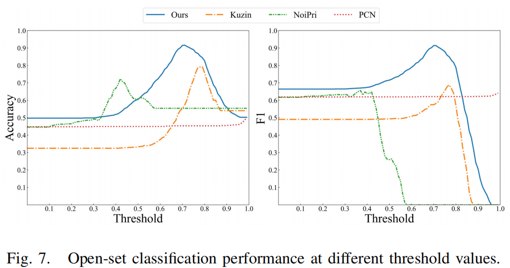
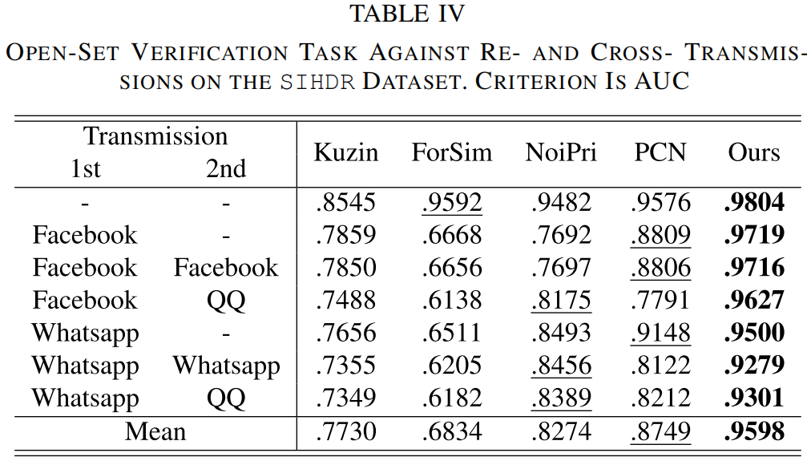

Robust Camera Model Identification Over Online Social Network Shared Images via Multi-Scenario Learning
论文（arxiv）
摘要
相机模型识别（CMI，Camera model identification）可广泛应用于图像取证的真实性鉴定、版权保护、伪造检测等领域。同时，随着互联网的蓬勃发展，在线社交网络（OSNs， online social networks）已成为图像共享和传输的主导渠道。然而，在OSNs上不可避免的损耗操作，如压缩和后处理，给现有的CMI方案带来了巨大的挑战，因为它们严重破坏了被调查图像中留下的相机痕迹。在这项工作中，我们提出了一种新的CMI方法，它对各种OSN平台的有损操作具有鲁棒性。具体来说，可以观察到，一个相机跟踪提取器可以很容易地训练在一个单一的退化场景（例如，一个特定的OSN平台）；而在混合退化场景中（例如，多个OSN平台）要困难得多。受此启发，我们设计了一种新的多场景学习（MSL， multi-scenario learning）策略，使我们能够在不同的osn中提取鲁棒的摄像机痕迹。此外，注意到图像平滑区域由OSN引起的失真更少，而图像信号本身的干扰更小，我们提出了一种平滑感知的痕迹提取器（STATE，SmooThness-Aware Trace Extractor），它可以根据输入图像的平滑度自适应地提取相机痕迹。通过与四种先进方法的比较实验，验证了该方法的优越性，特别是在各种OSN传输场景下。特别是在开放集摄像机模型验证任务中，我们在FODB数据集上的AUC大大超过第二名15.30%；而在闭集相机模型分类任务中，我们在SIHDR数据集的F1中显著领先第二名34.51%。我们所提出的方法的代码可在https://github.com/HighwayWu/CameraTraceOSN上找到。
稿件于2022年11月24日收到；分别于2023年8月4日和2023年9月18日修订；2023年9月18日接受。出版日期为2023年9月25日；当前版本的日期为2023年11月20日。澳门科技发展基金2021-2023、0072/2020/AMJ、0022/2022/2/A1、0014/2022/AFJ；部分由澳门大学研究委员会MYRG2020-00101-FST和MYRG2022-00152-FST；中国自然科学基金61971476；部分由阿里巴巴集团通过阿里巴巴创新研究项目。协调审查这份手稿并批准其出版的副主编是Dr.
Benedetta Tondi。（通讯作者：Jiantao Zhou）
Haiwei Wu、 Jiantao
Zhou、Xinyu
Zhang就职于智慧城市物联网国家重点实验室和澳门大学科技部计算机与信息科学系，中国澳门999078（电子邮件：
yc07912@umac.mo；jtzhou@umac.mo；mc14958@umac.mo）。
Jinyu
Tian就职于澳门科技大学创新工程学院，中国澳门999078（电子邮件：
jytian@must.edu.mo）。
Weiwei
Sun在阿里巴巴集团工作，位于中国，杭州311100（电子邮件：
sunweiwei.sww@alibaba-inc.com）。
数字对象标识符
10.1109/TIFS.2023.3318968
索引术语：相机模型识别，在线社交网络，深度神经网络，鲁棒性。
1. 引言
每个相机模型在捕获的图像上产生独特的模式噪声。这种模式噪声，也称为摄像机痕迹，主要是由传感器对光子的不同响应和/或内部图像信号处理（ISP）管道产生[1]、[2]、[3]。传统最常用的两种相机迹线提取方法分别是光响应不均匀性（PRNU，
photo response non-uniformity）[1]和固定模式噪声（FPN， the fixed
pattern
noise）[4]。最近的一些努力也尝试整合PRNU和卷积神经网络（CNN）来提取摄像机的轨迹，以获得更好的分辨性能[5]，[6]。摄像机跟踪的高可鉴别性使其广泛应用于相机模型识别（CMI，
camera model
identification）[7]、伪造检测[5]、传输分类[8]、[9]等各种取证任务。
CMI的最新性能是通过基于学习的方法[6]、[10]、[13]来实现的，这些方法通常由两个子网络组成，即提取器和分类器。在训练阶段，给定一个训练图像及其相关的相机标签，提取器的目标是提取摄像机轨迹（高维特征向量），而分类器通过评估提取的轨迹是否可以分类为正确的标签来监督提取器的训练。在测试阶段，分类器通常被丢弃，训练良好的提取器可以用来提取任何输入图像的摄像机轨迹。关于基于通用学习的CMI的更多讨论将见图4和第三节。
在实际情况下，被调查的图像通常不是直接来自相机，而是经过了一系列的处理。例如，现在许多图像从各种在线社交网络（OSNs，
online social
networks）中获得，这不可避免地应用了许多类型的有损操作，如JPEG压缩、缩放和后处理[14]、[15]、[16]。这些操作可能会干扰现有的相机痕迹提取算法，导致它们的性能严重下降。图1给出了一个说明例子，显示了在FODB
[12]数据集上的相机模型验证任务的性能。
图1。与Kuzin [10]、NoiPri [5]、ForSim [11]和PCN [6]等最先进的方案相比，我们提出的方法在开放集验证任务上的性能。需要注意的是，测试数据集FODB [12]和所考虑的OSN平台（Twitter、WeChat、QQ、Telegram和Dingding）在训练阶段都是未知的，模拟了实际情况。详情请参见第五节。
可以观察到，最先进的方法[5]，[6]，[10]，[11]在无传输（NoTrans）中可以实现近90%的AUC，但考虑到OSN传输，所有现有算法的性能都会严重下降，尤其是WeChat、QQ、Telegram和Dingding。
为了减轻OSN的负面影响，在本工作中，我们提出了一种新的相机轨迹提取方法，该方法有望对各种OSN平台的传输具有鲁棒性。为简单起见，我们主要关注单轮OSN传播病例，之后我们也展示了多轮传播的一些结果。需要注意的是，我们更感兴趣的是设计一个统一的提取器，能够针对不同类型的OSN传输提取强大的相机痕迹；而不是准备一系列提取器，每个提取器对应一种特定类型的OSN传输。我们提出的鲁棒CMI方法主要受到两个重要观察结果的启发。
1)观察1
在图2中，我们展示了在所谓的单一和混合OSN场景的训练过程中，提取器的损失曲线。
图2。观察1：在VISION[17]数据集上的摄像机分类任务中的训练损失。紫色的线表示使用NoTrans（原始）图像进行的训练，而红、绿和蓝线分别对应于单一场景（Facebook和Whatsapp）和混合场景。此外，我们提出的MSL被标记为橙色线。
这里，“Single”表示训练数据只包含一个特定的OSN传输场景，如NoTrans、Facebook或Whatsapp，分别对应于图2中的紫色、绿色和红线。相比之下，“Mixed”指的是训练数据包含多个OSN传输场景的情况，如混合上述三种场景，如蓝线所示。可以清楚地看出，混合情景的损失曲线远远高于每个单一情景。这意味着，在混合场景中，提取器比在单一场景中更难以提取鲁棒的轨迹。因此，我们推测不同OSN传输场景下摄像机轨迹的特征空间更有可能不重叠，这使得寻找局部最优的训练过程更加困难。换句话说，一个对一个给定的OSN传输场景很鲁棒的特定摄像机痕迹可能不适用于其他场景。
因此，为了使摄像机跟踪提取器能够更好地从混合场景中学习共享表示，我们提出了多场景学习（MSL，
multi-scenario learning
），通过逐个场景的方式策略性地训练提取器。与传统的基于学习的CMI方法不同，我们使用了N个（N个>
1）分类器，对应于训练数据中的N个场景。请注意，这N个分类器具有未共享的权值，从而放宽了每个OSN传输场景的分类器在单个分类器情况下必须相同的约束条件。具体来说，每个N个分类器都监督一个特定的OSN传输场景的训练数据。例如，第一个分类器监督NoTrans的数据场景中，第二个分类器监督Facebook场景的数据，等等。与传统的仅使用一个分类器监督提取器[6]、[10]训练的方法相比，MSL策略可以有效地减轻对不同OSN传输场景数据训练的干扰。
我们采用N个分类器的MSL的另一个原因是训练复杂性不同。例如，从NoTrans场景中提取相机痕迹的任务显然比从Facebook场景中更容易。与只有一个分类器的传统方法相比，使用不同的分类器分离这些场景有利于学习不同的OSN传输场景之间的共享表示。然而，不平衡的训练复杂性问题可能导致逆向过程中不同场景的训练方向不一致，从而导致梯度冲突[18]。目前已经提出了一些通过梯度归一化[19]或梯度下降[20]来缓解梯度冲突的算法。然而，这些算法是基于单一的逆向过程设计的，这可能不能充分描述不同场景之间的冲突，特别是当场景相似时。因此，为了彻底描述和过滤不同场景之间的冲突，我们进一步提出在MSL中引入一个动量掩蔽操作，该操作通过积累历史上的逆向过程来生成过滤器掩蔽。
我们提出的MSL的效果如图2中的橙色曲线所示，明显优于传统混合场景训练所对应的蓝色曲线。
2)观察2：
第二个观察结果是，图像中的平滑区域通常比纹理区域遭受更少的OSN处理。如图3所示，天空的失真相对于树木的要低，这表明在平滑区域的更多的摄像机轨迹可以在传输中存活下来。
这种现象是合理的，因为纹理区域包含更多的高频信号，而在OSN
[21]中，通过压缩和缩放等操作通常会被丢弃。另一方面，现有的作品[11]，[22]证实了在纹理区域中的相机痕迹被复杂的信号本身所掩盖。这一现象表明，痕迹提取器应该更加关注图像的平滑区域。为此，Guera等人通过训练CNN估计全局可靠性图，选择符合条件的区域，而Mayer和Stamm
[11]利用固定的熵阈值来过滤合适的图像补丁。然而，通过像[22]这样的一个单独的CNN来估计可靠性图是无效的，并且被[11]丢弃的补丁仍然可以携带关于相机痕迹的有用信息。在本研究中，我们提出了基于交叉注意机制的平滑度感知轨迹提取器（STATE，
SmooThness-Aware Trace
Extractor），以便更灵活、更有效地从不同区域提取相机轨迹。
正如预期的和将被实验验证，我们提出的基于上述观察设计的方法显示了令人满意的鲁棒性，并显著超过了最先进的算法，特别是在各种OSN传输场景中。如图1所示，我们的方法不仅在NoTrans场景中超越了现有的算法，而且在各种OSN平台上的传输上也取得了很大的性能提高。
我们的主要贡献如下：
- 据我们所知，是我们首次将MSL策略用于CMI，并证明了该策略对OSN传输具有令人满意的鲁棒性。
- 我们提出了STATE根据区域平滑度，灵活有效地学习相机的痕迹。
- 与最先进的方法[5]，[6]，[10]，[11]方法相比，我们的方法获得了更好的鲁棒性性能，特别是在OSN传输的场景中。
- 我们基于现有的相机数据集FODB [12]和SIHDR [23]，构建了9个流行的osn（Twitter、Telegram、Whatsapp、Instagram、 Facebook、Weibo、QQ、Dingding和WeChat）的OSN传输数据集，不仅可以评估CMI算法的鲁棒性，而且有利于不同的取证应用。
2. 相关工作
A.照相机型号识别（CMI，Camera Model Identification）
已经提出了许多方法[1]，[5]，[6]，[10]，[11]，[13]，[24]，[25]，[26]，[27]，[28]，[29]，[30]来表征数字图像中包含的相机痕迹。这些方法大致可以分为传统的类型和基于学习的类型。具体来说，几种传统的方法通过对在图像采集过程中进行的操作进行建模来提取相机的轨迹。最著名的方法之一是PRNU
[1]，它建模由传感器缺陷引入的噪声模式。与具有乘法噪声模型的PRNU不同，Thai等人开发了一个广义噪声模型，涉及更多的图像处理操作，如原始像素之间的线性关系、伽马校正的非线性效应等。同样，通过估计相机内必备过程的参数，如彩色插值和彩色滤镜阵列，斯瓦米纳坦等[25]设计了非逼逼组件取证。博尼蒂尼等人。[26]后来分析了不同的JPEG特征算法，并表明JPEG压缩留下的痕迹可以用于CMI。
与手工设计特征的繁琐过程相比，随着cnn的快速发展，许多基于学习的CMI算法最近被提出。CMI的开创性深度学习方案是由Bondi等人[13]设计的，其算法超过了利用手工特征[27]，[28]。通过引入细粒度的标签，[30]等人提出了一种在均匀区域内进行层次分类的相机识别算法。受PRNU的启发，Cozzolino
and
Verdoliva[5]利用孪生子网络，通过同时增强相机伪影和抑制高频场景内容来提取相机噪声表示。利用PRNU
[1]算法预提取摄像机模型噪声，Mandelli等[6]提出了一种快速高效的成对相关网络，以更好地分析大型数据库的实用性。Mayer和Stamm
[11]没有明确地描述相机的轨迹，而是引入了一种可学习的算法来测量两个图像斑块的相似性，以确定两幅图像是否来自同一个相机模型。
需要注意的是，现有的CMI算法[5]、[6]、[10]、[11]在被调查的图像进行一些损耗操作时，仍然会出现严重的性能下降，特别是在实际的OSN传输场景中。因此，开发鲁棒的CMI方法至关重要，促进其在许多多媒体取证任务中的实际部署。
B. 在线社交网络（OSN，Online Social Network）
在线社交网络大大简化了多媒体数据的传输。如今，OSNs [31]有近37.8亿日活跃用户，超过32亿张图片在日常[32]上被共享。Facebook、YouTube、Whatsapp、Instagram和WeChat是目前最受欢迎的五大社交平台，[33]的月活跃用户分别为29亿、22亿、20亿、20亿和12亿。然而，osn并不是法医友好的平台，因为它们不可避免地进行的有损操作可能会严重影响许多类型的法医算法[34]。例如，Castiglione等人的[35]证实，OSN引入的噪声会降低PRNU [1]的识别能力。因此，许多法医方案努力提高其对OSN [14]、[15]、[36]、[37]、[38]、[39]的负面影响的鲁棒性。
3. 照相机模型识别的基线方案
在深入研究CMI的鲁棒设计之前，我们首先介绍了基于学习的基线方案的架构，该方案包括两个网络，即提取器和分类器，如图4所示。
与现有的[6]、[10]、[13]方案类似，提取器的目的是提取摄像机的痕迹，而分类器则监督提取器的训练。在我们的基线方案中，提取器的特定体系结构采用了EfficientNet-b0。该选择是基于一个初步的实验，比较了不同候选架构的相机痕迹提取性能，包括ResNet
[40]、VGG [41]、XceptionNet[42]、EfficientNet[43]、ViT
[44]和SwinTransformer[45]等。对于分类器架构，我们简单地将其设计为线性层和SoftMax变换的组合。
一旦确定了提取器和分类器网络的体系结构，另一个关键问题是如何在测试阶段训练和使用它们。在图4中，我们说明了基线CMI方案的训练和测试过程。在训练阶段，给定一个由Y个不同相机模型捕获的图像组成的数据集\(\cal{D}\)，\((\mathbf{X},y)\)表示一对训练数据，其中\(\mathbf{X}\in\mathbb{R}^{H\times W\times
C}\)为输入图像，\(y\in\{1,2,\cdots,Y\}\)为相机的标签。具有可训练参数\(\theta\)的提取器\(\mathcal{N}_{\boldsymbol{\theta}}\)旨在提取能够表征相机痕迹的高级特征\(\mathbf{T}\)，\(\mathbf{T}=\mathcal{N}_{\boldsymbol{\theta}}(\mathbf{X})\)。为了监督\(\mathcal{N}_{\boldsymbol{\theta}}\)的训练，分类器\(\mathcal{C}_{\phi}\)将\(\mathbf{T}\)转换为\(\mathbf{\hat{y}}=\mathcal{C}_{\phi}(\mathbf{T})\)来计算损失\(\ell(\mathbf{\hat{y}},y)\)，其中\(\ell\)是广泛使用的交叉熵损失，即： \[\ell(\hat{\mathbf{y}},y)=-\sum_{i=1}^Y\mathcal{I}[y=i]\cdot\log(\hat{\mathbf{y}}^{<i>}).\]
这里\(\mathbf{\hat{y}}^{<i>}\)表示\(\mathbf{\hat{y}}\)的第\(i\)个条目，\(\mathcal{I}[y=i]\)是一个二进制指标函数，如果是y
= i，则取1，否则取0。
经过训练，训练良好的\(\mathcal{N}_{\boldsymbol{\theta}}\)可以根据[6]用于两个测试用例：
1)开集验证，目的是推断两个测试图像是否被同一相机模型捕获；2)闭集分类，目的是在有限的相机模型池中识别测试图像的源相机模型。
请注意，在这两种情况下，分类器\(\mathcal{C}_{\phi}\)都被丢弃了。具体来说，在前一种情况下，给定两个图像\(\mathbf{X_1}\)和\(\mathbf{X_2}\)，它们的痕迹\(\mathbf{T_1}\)和\(\mathbf{T_2}\)首先由训练过的\(\mathcal{N}_{\boldsymbol{\theta}}\)提取。然后，通过余弦相似度计算这些痕迹被同一相机拍摄的概率：
\[S(\mathbf{T}_1,\mathbf{T}_2)=\cos\Big(\frac{\mathbf{T}_1}{||\mathbf{T}_1||},\frac{\mathbf{T}_2}{||\mathbf{T}_2||}\Big).\]
对于闭集分类案例的测试过程，给出一组已知标签的\(y_i\in\{1,2,\cdots,Y\}\)的图像，\(\mathcal{N}_{\boldsymbol{\theta}}\)首先提取它们的痕迹\(\mathbf{T_i}\)。然后，平均相同相机模型的痕迹，可以形成一个痕迹池\(\{\mathbf{\bar{T}}_{i}\}_{i=1}^{Y}\)。换句话说，池中的每个元素代表一个特定相机模型的平均痕迹。当一个测试图像\(\mathbf{X_t}\)出现时，其预测的相机类型\(y_t\)可以从痕迹池中搜索最大的相似性，即：
\[y_t=\underset{i}{\mathrm{argmax}}S(\mathbf{T}_t,\bar{\mathbf{T}}_i)\]
其中，\(\mathbf{T_t}\)为通过\(\mathcal{N}_{\boldsymbol{\theta}}\)提取的测试图像的痕迹。
虽然我们的基线CMI可以用于提取摄像机痕迹，并最终在上述两个测试用例中被采用，但在有损传输上的性能，如各种OSN传输场景，可能会严重降低。这些场景所引入的扭曲很可能会破坏相机的痕迹，这在本质上是脆弱的。在表I中，我们简要展示了FODB
[12]数据集上不同的osn造成的畸变，包括平均分辨率和文件大小的减少，以及平均采用的JPEG质量因子（QFs）。
由FODB [12]数据集上不同的OSNS造成的失真。在这里，“SCALE”和“SIZE”分别表示分辨率减少和文件大小减少的百分比。另外，“JPEG QF”表示qf值的平均值。
可以看出，最严重的畸变是由Dingding造成的，导致分辨率降采样84.60%，文件大小减少93.93%，从最低的平均QF值69.3也可以观察到。其中考虑的最友好的OSN平台是微博，导致分辨率降采样57.77%，文件大小减少60.19%。可以清晰地得到如下结论，这些OSN失真将严重影响CMI算法，因此设计一个鲁棒的CMI方案至关重要，能够可靠地提取OSN传输中摄像机的痕迹。
4. 鲁棒相机模型识别
在有了基线之后，我们提出了一种新的方法来设计一个强大的CMI来对抗各种osn上的传输，其中关键的创新是双重的：MSL和STATE。正如预期的那样，并将通过实验验证，STATE为不同的输入提取了更多的自适应痕迹，而MSL策略更好地监督了状态的训练，共同有助于鲁棒提取摄像机痕迹的目标。
所提出的鲁棒CMI的训练过程如图5所示。
图5。我们提出的鲁棒CMI的训练过程。STATE从给定的图像中提取摄像机的痕迹，而MSL策略利用一组分类器，在逐个场景的基础上监督STATE的训练。
具体来说，给定一个训练图像\(\mathbf{X}\)，我们首先收集其在N个场景下的传输变体。为了达到令人满意的鲁棒性，在本工作中，我们定义了由NoTrans组成的场景。（原始），两种类型的OSN传输：Facebook和Whatsapp，这也被考虑在VISION数据集[17]。此外，考虑到训练和测试场景之间的差异，我们手工制作了一个增强场景来改进对未知（新的）osn的泛化，其中增强包括常用的后处理操作，如缩放、压缩、模糊和噪声添加。更多关于场景影响的分析，例如，不同数量的场景及其组合被推迟到第五章中的消融研究G.4。对于每个变体，STATE \(\mathcal{N}_{\boldsymbol{\theta}}\)提取相应的痕迹\(\mathbf{T}\)，其中嵌入的平滑注意模块引导\(\mathcal{N}_{\boldsymbol{\theta}}\)更多地关注\(\mathbf{X}\)中的平滑区域。根据观察I，使用N个分类器\(\{\mathcal{C}_{\phi_{n}}\}_{n=1}^{N}\)来监督\(\mathcal{N}_{\boldsymbol{\theta}}\)的训练，其中每个分类器处理每个单独场景的训练。例如，\(\mathcal{C}_{\phi_1}\)处理NoTrans场景，\(\mathcal{C}_{\phi_2}\)处理Facebook场景等。接下来，将在\(\{\mathcal{C}_{\phi_{n}}\}_{n=1}^{N}\)上生成的总损失\(\sum_{n=1}^{N}\mathcal{L}_{n}\)进行反向传播，以更新与STATE \(\mathcal{N}_{\boldsymbol{\theta}}\)相关的可学习参数\(\theta\)和与N个分类器相关的\(\{\boldsymbol{\phi}_n\}_{n=1}^N\)。
在测试阶段，该过程类似于基线CMI，其中只需要训练好的状态\(\mathcal{N}_{\boldsymbol{\theta}}\)，而N个分类器\(\{\mathcal{C}_{\phi_{n}}\}_{n=1}^{N}\)被丢弃。在下面，我们将提供更多关于我们提出的MSL策略和STATE 的更多细节。
A. 多场景学习（MSL，Multi-Scenario Learning）
如前所述，受观察1启发，我们的MSL策略使用了多个具有非共享权重的分类器来监督多个场景的训练。多分类器产生的一个隐式问题是训练过程可能不稳定。这是因为训练的复杂性因不同的场景不同，导致梯度方向上的冲突。为了弥补这一缺陷，我们建议在MSL的逆向过程中集成一个动量掩膜操作来减轻梯度冲突。我们现在详细介绍我们提出的MSL的前向和反向过程的细节。
1)前向过程
设\(\mathbf{X}\)为输入图像，\(\{\mathbf{X}_{n}\}_{n=1}^{N}\)是其在N个场景下的N个变体，\(\{\mathbf{T}_{n}\}_{n=1}^{N}\)是它们由STATE
\(\mathcal{N}_{\boldsymbol{\theta}}\)提取的痕迹。有关\(\mathcal{N}_{\boldsymbol{\theta}}\)的细节将推迟到下一小节。同时，利用每个分类器\(\mathcal{C}_{\phi_n}\)，根据第n个场景中的训练数据来监督训练过程，损失如下：
\[\mathcal{L}_n=\ell(\mathcal{C}_{\boldsymbol{\phi}_n}(\mathbf{T}_n),y),\]
其中，\(\ell\)为(1)中给出的交叉熵损失。
值得注意的是，损失函数(4)和损失函数(1)之间的关键区别在于前者涉及多个非共享分类器，而后者只使用一个。另外，请注意，\(\mathbf{T}_{n}\)和\(\mathcal{C}_{\phi_n}\)应该有相同的下标n，以便逐场景实现MSL训练场景。
2)反向过程
在反向过程中，分类器\(\mathcal{C}_{\phi_n}\)的参数更新为： \[\phi_n=\phi_n-r\nabla_{\phi_n}\mathcal{L}_n,\]
其中，r是学习率。同样，提取器\(\mathcal{N}_{\boldsymbol{\theta}}\)的反向更新可以表示为：
\[\theta=\theta-r\sum_{n=1}^N\nabla_{\theta}\mathcal{L}_n.\]
然而，这里的\(\sum_{n=1}^N\nabla_{\boldsymbol{\theta}}\mathcal{L}_n\)由N项组成，对应于N个场景，其中不一致的梯度方向可能导致冲突，导致\(\mathcal{N}_{\boldsymbol{\theta}}\)
[18]的次优训练。此外，通过\(\mathbf{T}_n=\mathcal{N}_{\boldsymbol{\theta}}(\mathbf{X}_n)\)和使用链规则，(6)可以重写为：
\[\theta=\theta-r\sum_{n=1}^N\left(\frac{\partial\mathbf{T}_n}{\partial\boldsymbol{\theta}}\right)^T\nabla_{\mathbf{T}_n}\mathcal{L}_n,\]
其中，\(\partial\mathbf{T}_n/\partial\boldsymbol{\theta}\)为\(\mathbf{T}_n\)的雅可比矩阵。为了减轻梯度冲突对(6)或(7)中\(\mathcal{N}_{\boldsymbol{\theta}}\)更新的影响，一种解决方案是设计非冲突梯度\(\mathbf{L}_{n}\)作为\(\nabla_{\phi_n}\mathcal{L}_n\)的替代品。
根据[20]，可以通过基于一致性水平逐元素掩膜\(\nabla_{\phi_n}\mathcal{L}_n\)来形成非冲突梯度\(\mathbf{L}_{n}\)。具体来说， \[\mathbf{L}_n=\mathbf{M}_n\odot\nabla_{\mathbf{T}_n}\mathcal{L}_n,\]
其中，\(\odot\)表示元素级乘法。这里的\(\mathbf{M}_n\)是一个与\(\nabla_{\phi_n}\mathcal{L}_n\)具有相同维数的二进制矩阵，定义为：
\[\begin{aligned}\mathbf{M}_{n}&=\mathcal{I}[\mathbf{P}\succcurlyeq\mathbf{U}]\odot\mathcal{I}[\nabla_{\mathbf{T}_{n}}\mathcal{L}_{n}\succcurlyeq\mathbf{0}]\\&+\mathcal{I}[\mathbf{P}\preccurlyeq\mathbf{U}]\odot\mathcal{I}[\nabla_{\mathbf{T}_{n}}\mathcal{L}_{n}\preccurlyeq\mathbf{0}],\end{aligned}\]
其中\(\mathcal{I}\)为标准指标函数，适当尺寸的\(\mathbf{U}\)表示一个从均匀分布\(U(0,1)\)中抽样的随机矩阵，\(\geq(\preccurlyeq)\)为元素不等式。此外，\(\mathbf{P}\)测量了给定梯度中包含的正符号的纯度（一致性），其表述为：
\[\mathbf{P}=\frac{1}{2}\big(1+\frac{\sum_n\mathbf{G}_n}{\sum_n|\mathbf{G}_n|}\big),\]
其中\(\mathbf{G}_{n}=\mathrm{sign}(\mathbf{T}_{n})\odot\nabla_{\mathbf{T}_{n}}\mathcal{L}_{n}\)在批处理维度上合并了梯度贡献，所有的计算包括除值和绝对值操作都是逐元素进行。
然而，由（10）计算的\(\mathbf{P}\)依赖于单个反向的特定梯度\(\nabla_{\mathbf{T}_{n}}\mathcal{L}_{n}\)（或输入\(\mathbf{X}\)），限制了其在局部描述梯度一致性的能力。这可能导致不稳定的训练或在某些情况下较差的局部最小值，例如当批中的冲突相互抵消时。因此，我们建议通过动量平均[46]来考虑历史梯度，而不是只涉及当前反向的梯度。这样，\(\mathbf{P}\)就可以全局计算不同场景的一致性，稳定了随机梯度下降（SGD，stochastic
gradient descent）中的训练更新。
为了将动量的概念应用于\(\mathbf{P}\)的生成，我们重新定义了第t个反向过程中的纯度为：
\[\mathbf{P}^{(t)}=\frac{1}{2}\big(1+\frac{\sum_n\mathbf{g}_n^{(t)}}{\sum_n|\mathbf{g}_n^{(t)}|}\big),\]
其中 \[\begin{aligned}\mathbf{g}_n^{(t)}&
=\mu\cdot\mathbf{g}_{n}^{(t-1)}+(1-\mu)\mathbf{G}_{n}^{(t)}
\\&=\mu^{t-1}\mathbf{g}_{n}^{(1)}+\sum_{i=1}^{t-2}\mu^{i}(1-\mu)\mathbf{G}^{(t-i)}+(1-\mu)\mathbf{G}_{n}^{(t)}\end{aligned}\]
在之前的t−1个历史反向过程上累积梯度，\(\mathbf{g}_n^{(1)}\)被初始化为\(\mathbf{G}_{n}^{(1)}\)。这里的\(\mu\)是控制最近梯度的权重的衰减因子。在实践中，我们根据经验设置\(\mu=0.95\)。显然，当\(\mu=0\)时，动量\(\mathbf{P^{(t)}}\)退化到原来的\(\mathbf{P}\)。
在得到动量纯度\(\mathbf{P^{(t)}}\)后，可以通过用\(\mathbf{P^{(t)}}\)代替\(\mathbf{P}\)来相应地计算出(9)中的掩模\(\mathbf{M}_{n}\)和(8)中的非冲突梯度\(\mathbf{L}_{n}\)。最后，使用\(\mathbf{L}_{n}\)通过以下方式更新\(\mathcal{N}_{\boldsymbol{\theta}}\)的参数：
\[\theta=\theta-r\sum_{n=1}^N\left(\frac{\partial\mathbf{T}_n}{\partial\boldsymbol{\theta}}\right)^T\mathbf{L}_n.\]
3) MSL训练算法
我们总结了算法1中的整个MSL训练过程。
更具体地说，前向过程在行5∼7中描述，而其余行专门用于反向过程。在第5行中，我们收集了N个场景中的输入变体，这也可以提前离线进行。然后，STATE
\(\mathcal{N}_{\boldsymbol{\theta}}\)提取第6行中的摄像机痕迹，并利用分类器\(\mathcal{C}_{\phi_n}\)来计算第7行中的损失。为了减轻损失中的梯度冲突，第8行∼20主要用于产生动量掩模\(\mathbf{M}_n\)，然后在第21行中用于更新\(\theta\)。最终，经过训练的\(\mathcal{N}_{\boldsymbol{\theta}}\)在第24行产生。
备注：一种简单的替代训练策略是在不同的场景下重新标记数据，并通过一个单一的分类器来计算预测。例如，一个包含29个摄像机和4个场景的数据集可以被表示为一个包含29个×4=116个类别的单一分类任务。一个潜在的关键问题是，这种替代方案假定不同场景之间有足够的可变性；否则，某些类别在某种程度上是无法区分的。然而，这个假设并不总是正确的，例如，对于NoTrans，在场景和裁剪场景中，摄像机的痕迹或多或少是相同的。换句话说，一个痕迹实际上可能对应于多个标签，这可能会导致训练过程中的不稳定。在我们提出的MSL策略中，这种困境可以通过N个分类器很自然地避免。
我们现在将介绍STATE提取器的架构的细节。
B. 清晰识别痕迹提取器（STATE，SmooTh-Aware Trace Extractor）
STATE的目的是根据给定图像的局部平滑度进行专注的相机跟踪提取。在这项工作中，我们使用著名的香农熵[47]来表示一个图像块的平滑性。显然，越小的熵值表示越光滑的区域，活动越少，反之亦然。在我们提出的STATE下，我们利用交叉注意[48]层来实现注意提取，其中平滑矩阵被转换为一个注意映射并作为指导。我们想强调的是，我们提出的STATE明确地应用了根据观察2之前的平滑性，因此和交叉注意层的简单采用有显著的不同。
STATE的过程如图5所示。

具体地说，我们首先将大小为\(H\times
W\)的输入图像分割为不重叠的块\(\{\mathbf{R}_{i}\}\)，每一个块行长\(\frac{H}{\hat{H}}\)、列长\(\frac{W}{\hat{W}}\)，总共得到\(\hat{H}\times\hat{W}\)个块。对于第\(i\)个块\(\mathbf{R}_{i}\)，我们计算相关的平滑度指标，即香农熵\(E_i\)： \[E_i=-\sum_{v=0}^{255}p_v\mathrm{log}(p_v),\]
其中 \[p_{v}=\frac{\hat{H}\hat{W}}{HW}\sum_{h=0}^{H/\hat{H}}\sum_{w=0}^{W/\hat{W}}\mathcal{I}[\mathbf{R}_{i}^{<h,w>}=v]\]
为\(\mathbf{R}_{i}\)内的像素值为\(v\)的概率。然后，通过将\(\{E_i\}\)分组和重塑为维数\(\hat{H}\times\hat{W}\)，可以得到平滑矩阵\(\textbf{S}\in\mathbb{R}^{\hat{H}\times\hat{W}}\)。在实际实现中，我们对输入图像进行灰度处理以降低复杂性，并使用单热编码来进行高效的批处理。
得到平滑矩阵\(\textbf{S}\)后，我们首先通过基线提取器提取内部特征\(\textbf{X}^f\)，然后根据\(\textbf{S}\)在\(\textbf{X}^f\)上执行交叉注意力，特别注意的是，\(\textbf{X}^f\)和\(\textbf{S}\)分别通过压扁化得到\(\mathbf{\hat{x}}^{f}\)和\(\hat{\mathbf{s}}\)，其大小为\(\hat{H}\hat{W}\times\hat{C}\)，其中\(\hat{C}\)是标记化后的通道数。然后通过计算每个\(\hat{C}/K\)通道的注意力，对展平的\(\mathbf{\hat{x}}^{f}\)和\(\hat{\mathbf{s}}\)计算K头注意力，结果是k头特征\(\{\hat{\mathbf{X}}_k^a\}_{k=1}^K\)，其中：
\[\hat{\mathbf{X}}_k^a=\text{Attention}(\hat{\mathbf{S}}\mathbf{Q}_k,\hat{\mathbf{X}}^f\mathbf{K}_k,\hat{\mathbf{X}}^f\mathbf{V}_k),k=1,\ldots,K,\]
\(\mathbf{Q}_k\)、\(\mathbf{K}_k\)、\(\mathbf{V}_k\in\mathbb{R}^{\hat{C}^{2}/K}\)是交叉注意函数[48]的第k个投影的查询、键和值矩阵。这里，交叉注意力的执行是：
\[\mathrm{Attention}(\mathbf{Q},\mathbf{K},\mathbf{V})=\mathrm{SoftMax}(\frac{\mathbf{QK}^{T}}{\sqrt{\hat{C}/K}})\mathbf{V}.\]
接下来，所有头\(\{\hat{\mathbf{X}}_k^a\}_{k=1}^K\)的拼接输出用来线性预测，得到展平的注意力\(\mathbf{\hat{X}}^{a}\)： \[\mathbf{X}^a=\mathrm{MLP}(\mathrm{Concat}(\hat{\mathbf{X}}_1^a,\hat{\mathbf{X}}_2^a,\ldots,\hat{\mathbf{X}}_K^a)),\]
其中\(\mathrm{MLP}(\cdot)\)代表一个具有GELU激活[49]的MLP。最后，通过将其重塑为\(\hat{H}\times\hat{W}\times\hat
C\)分辨率，获得细化的注意力特征\(\mathbf{X}^{a}\)。
考虑到\(\mathbf{X}^{a}\)中的维数冗余性，我们遵循传统的[6]，[10]，采用全局平均池化和线性映射将\(\mathbf{X}^{a}\)编码为低维空间\(\mathbb{R}^d\)，从而得到最终的相机痕迹\(\mathbf{T}\)。
5. 实验结果
在本节中，我们将从开放集验证、闭集分类、对OSN传输的鲁棒性、后处理操作和重传输等方面全面评估所提出的CMI方法的性能。进一步，给出了系统的消融研究和分析。在介绍详细的结果之前，让我们先介绍一下实验设置。
A.实验设置
1)训练数据集：
为了训练所提出的方法，类似于[5]，[6]，我们使用了包括29个不同的相机模型的VISION[17]数据集。在[5]、[6]、[11]和[10]之后，我们合并了来自不同设备但具有相同模型的图像，以避免歧义。需要注意的是，该数据集包含Facebook和Whatsapp传输的变体，可以方便地用作N个场景的训练数据（见图5）。
2)测试数据集
为了更好地模拟实际情况并评估泛化，我们采用FODB [12]和SIHDR [23]作为交叉测试数据集，与训练数据没有重叠。FODB数据集由25个模型和27个设备组成，而SIHDR数据集分别由21个模型和23个设备组成。在这两个数据集中，每个模型都有一个额外的设备。除非另有说明，我们将根据FODB（和SIHDR）数据集中对具有相同模型的不同设备的图像进行标记，类似于在VISION中进行的过程。
3)在线社交网络
虽然FODB数据集本身包含5个OSN传输版本（Twitter、Telegram、Whatsapp、Instagram和Facebook），但我们进一步将FODB和SIHDR数据集扩展到9个流行的OSN传输场景，包括Twitter、Telegram、Whatsapp、Instagram、 Facebook、Weibo、QQ、Dingding和WeChat。这使我们能够更广泛地评估CMI算法对当今实际OSN传输的鲁棒性。扩展的数据集和有关操作系统和OSN平台版本的详细信息可在https://github.com/HighwayWu/CameraTraceOSN上获得。
4)比较方法
为了展示我们提出的CMI方法的优越性能，我们采用了四种最先进的算法作为竞争对手，即Kuzin [10]，ForSim [11]，NoiPri [5]和PCN [6]。
5)实现细节
在培训期间，MSL策略中采用的场景数量设置为4，包括NoTrans、Facebook和Whatsapp（由VISION数据集本身提供），以及一个额外的手工增强场景。引入增强场景的原因是为了进一步提高网络对看不见的场景的泛化能力。更具体地说，增强是通过随机混合0∼50%的降采样，与QFs70∼100的JPEG压缩，与核3∼5的高斯模糊，与方差3∼10的高斯噪声相加形成的。
我们使用PyTorch深度学习框架实现我们的方法，其中采用默认参数的Adam
[50]作为优化器。学习速率初始化为1e-4，如果验证损失在5个时期内没有减少，则学习速率减半。在训练过程中，所有输入的图像被随机裁剪成512个×512补丁。内部特征\(\textbf{X}^f\)、平滑矩阵\(\textbf{S}\)和交叉注意特征\(\textbf{X}^a\)具有32×32×320相同的特征维度。提取的痕迹\(\mathbf{T}\)的尺寸d（参见第IV-B节）设置为256。基于观察到提高测试图像的分辨率将提高性能[6]，[12]，我们将测试大小设置为1536×1536。为了便于我们的结果，我们的代码可以在https://github.com/HighwayWu/CameraTraceOSN上找到。
B.开集验证任务的评估
开放集验证任务的目的是推断两个给定的图像是否被同一相机模型捕获。为此，我们从每个相机模型中随机选择25张图像，然后对每个测试数据集形成5000对正对和5000对负对。由于验证任务本质上是一个二元分类问题，我们采用广泛使用的接收机工作特征曲线下面积（AUC）作为评价性能的标准（越高越好）。
从表二可以看出，当图像不通过OSN传输时，所有现有方法都表现良好，AUC从87.32%到89.38%，而我们的方法略好，AUC提高了1.50%。然而，当图像通过osn传输时，所有现有方法的验证性能都会显著下降。以Twitter为例，与NoTrans场景相比，Kuzin
[10]、ForSim [11]、NoiPri [5]和PCN
[6]的AUC值分别下降了10.83%、26.97%、18.24%和12.23%。这种严重的性能下降可能是因为osn执行的有损操作极大地消除了原有的相机痕迹，特别是那些不鲁棒的痕迹。相反，通过利用我们提出的MSL策略和平滑注意，我们提出的方法可以探索高度鲁棒的摄像机痕迹，在Twitter场景中仅减少1.89%的AUC。对于表二中的其他OSN传输场景，我们的方法仍然表现出令人满意的鲁棒性，在AUC上平均优于第二优的方法15.30%。
对于表二下半部分的SIHDR数据集上的结果，我们可以观察到与FODB中的情况类似的现象。例如，对于ForSim，QQ平台的性能下降最为严重，AUC下降了33.62%，最友好的平台是Weibo，导致AUC下降了12.18%。相比之下，我们的方法具有非常理想的鲁棒性，平均超过第二名的AUC11.48%。还需要注意的是，这里考虑的所有方法在SIHDR上的表现都比FODB更好，这主要是因为SIHDR有更少的相机类别，而且类别之间的可变性更大。需要注意的是，在表二的每一列中，所有被选择的对都有两个图像通过相同的OSN。一个更具挑战性的实验，一对内的图像通过不同的osn传输，推迟到V-H节进一步阐述。
C. 闭集分类任务的评价
闭集分类任务的目标是预测有限的相机模型池中给定查询图像的来源，其中代表每个相机模型的“ground-truth”痕迹是从一组预定义的图像（即锚定集）[6]中提取的。通常，“ground-truth”的痕迹可以通过利用PRNU [1]算法，或者简单地通过平均深层特征来获得。与开放集评估类似，我们从每个相机类别中随机抽取45张图像，其中25张图像作为锚定集，其余的图像作为查询图像。对于每个查询图像，预测的相机标签将被授予池中与提取的痕迹相似性最高的一个。
图6。在SIHDR数据集上的闭集分类任务的混淆矩阵。对于每个矩阵，纵轴和横轴分别代表实际的标签和预测的标签。在这里，每一行（列）代表一个独特的相机模型，例如，第一行、第二行和最后一行分别对应于GioneeS55、Huaiwei-P8和iPhone 5S。有关相机型号的具体信息，请参考我们的代码网站。
为了评估分类任务，我们在图6中显示了混淆矩阵，并在表3中显示了相应的精度（PRC）、召回率（RCL）和F1分数。在形式上，中国和RCL的定义为： \[\mathrm{PRC}=\frac{1}{Y}\sum_{y=1}^{Y}\frac{\mathrm{TP}_{y}}{\mathrm{TP}_{y}+\mathrm{FP}_{y}},\]
\[\mathrm{RCL}=\frac{1}{Y}\sum_{y=1}^{Y}\frac{\mathrm{TP}_{y}}{\mathrm{TP}_{y}+\mathrm{FN}_{y}},\]
其中，\(\mathrm{TP}_{y}\)、\(\mathrm{FP}_{y}\)和\(\mathrm{FN}_{y}\)分别代表给定类y的真阳性、假阳性和假阴性。那么宏观平均的F1得分可以计算如下：
\[\mathrm{F1}=\frac{1}{y}\sum_{y=1}^{Y}\frac{2\times\mathrm{TP}_{y}}{2\times\mathrm{TP}_{y}+\mathrm{FP}_{y}+\mathrm{FN}_{y}}.\] 
从表三可以看出，在NoTrans的情况下，我们的方法取得了相当令人满意的结果（96.38%
F1），明显优于两个强竞争对手PCN [6]和NoiPri
[5]算法（F1的差距分别为14.22%和20.51%）。当图像通过osn传输时，所有现有的方法都会受到严重的影响。例如，在QQ和WeChat上，PCN
[6]的F1的降幅分别为32.83%和62.30%，这被认为是巨大的。这意味着在OSN干扰下，PCN很难提取有区别的摄像机痕迹。从图6中给出的混淆矩阵也很容易观察到这种现象（见第三行最后一列）。相比之下，我们的方法通常对所有的OSN传输都具有鲁棒性，导致平均F1得分为87.15%。与竞争算法Kuzin
[10]、NoiPri [5]和PCN
[6]相比，我们在F1方面分别获得了46.68%、37.18%和34.51%的压倒性优势。在这里，表三每列中的查询和锚图像都通过了相同的OSN。
需要注意的是，我们在这里省略了ForSim
[11]的结果。这是因为在ForSim中使用的相似性网络只能提取测量给定输入对的相似性的特征，而不能捕获特定于一种相机跟踪类型的特征。因此，ForSim无法为锚点集提取相应的特征。
D. 开放式分类任务的评价
除了之前的开集验证和闭集分类任务外，我们现在还考虑开集分类任务，它不仅涉及检测给定图像是否已知，而且还包括对其特定标签的进一步分类。具体来说，假设SIHDR数据集中的摄像机已知，每个摄像机使用25张图像作为锚定集。我们在SIHDR中为每个相机模型选择20张新图像，并确定它们是否可以被正确地分类为已知的和正确的相机模型。此外，我们在FODB中的每个相机模型中选择了20张图像，并评估它们是否可以被归类为未知的，即在SIHDR中没有一个已知的（可疑的）模型。为了避免歧义，我们排除了SIHDR和FODB数据集所共有的相机模型。显然，确定过程需要建立一个接受或拒绝一个测试示例的阈值。特别是，我们直接拒绝一个与已知相机模型的最大相似度Smax低于给定阈值δ，只有当Smax
>
δ和正确预测时，才会接受。
以精度和f1为标准，图7所示了阈值范围从0到1的实验结果。

由于提取摄像机痕迹的方法不同，竞争的方法在不同的阈值下达到了各自的最佳性能。其中，Kuzin [10]的最佳准确率为79.26%，F1评分为68.87%，而NoiPri [5]的最佳准确率为72.30%，F1评分为65.58%。由于PCN倾向于对正对和负对产生相对较高的相似性得分，因此它对阈值变化变得不那么敏感，导致图7中没有峰值。其中，PCN获得的最高准确率和F1得分分别仅为50.07%和64.15%。这表明PCN并不很适合用于开放集分类任务。相比之下，我们提出的算法的准确率为91.63%，F1为91.40%，以准确率+12.37%、F1+22.53%的表现远远超过了第二好的算法。
E. 后处理评价
虽然本文的重点是针对各种CMI方案的OSN传输场景的鲁棒设计，但我们的设计也自然地为常用的后处理带来了令人满意的鲁棒性。具体来说，考虑的后处理操作包括QFs范围为70到95的JPEG压缩，因子从10%到50%的线性调整，核大小为[3,5,7]的高斯模糊，以及方差为[3,5,7,9]的高斯噪声相加。总共有18种不同的后处理操作，JPEG压缩、调整大小、模糊和噪声添加分别有6、5、3和4个变体。这些操作被应用于SIHDR数据集，其中包含929张图像。因此，总共生成了18×929 = 16,722张图像。对于每个图像，只应用了一种后处理攻击类型。鉴于OSN已经包含了复合攻击场景，我们这里的重点主要是对抗单一的后处理攻击。比较结果如图8所示。
可以看出，尽管ForSim [11]和NoiPri [5]在NoTrans场景中表现良好，但当遇到高斯模糊和高斯噪声添加等强后处理时，他们正在努力保持稳定的性能。Kuzin [10]在JPEG压缩和调整大小下相对稳定；但在高斯模糊和噪声增加的情况下，性能迅速下降。相比之下，PCN [6]和我们的方法对这些后处理操作具有更好的鲁棒性；对于所有考虑的情况，我们的方法仍然优于PCN，特别是在大核大小的高斯模糊中。
F. 再传输和交叉传输的评估
在实践中，通过多个OSN平台进行再传输和/或交叉传输（即，图像被下载并重新上传到相同或不同的osn上）是非常常见的。现在我们简要地讨论了不同CMI算法在再传输和交叉传输情况下的鲁棒性评估问题。具体来说，我们考虑的是通过Facebook的传输，其次是Facebook/QQ，其次是Whatsapp/QQ。结果列于表四之中。

可以观察到，第二轮传输，无论是再传播还是交叉传输，其影响远小于第一轮传播。我们的方法对两轮OSN传输都表现出相当强的鲁棒性，而竞争算法的性能要差得多。例如，例如，在通过Whatsapp场景之后再通过Whatsapp/QQ场景进行传输时，我们的方法只有2.21%/1.99% AUC下降，而PCN的性能下降更严重，达到10.26%/9.36% AUC损失。
G. 消融研究
在本小节中，我们通过分析每个组件如何有助于提取鲁棒的相机痕迹，对我们提出的方法进行消融研究。具体来说，我们首先禁止使用平滑注意和MSL策略，从而产生基线性能。然后，我们将注意力模块和MSL策略的不同变体纳入基线中，评估它们带来的额外性能收益。比较结果如表V所示，由于页面限制，它只包括在SIHDR [23]数据集下关于NoTrans、Facebook和Whatsapp场景的开放集验证结果。
1)平滑注意力的采用：
在表V的第二行中，我们给出了具有注意机制的结果。在这里，除了我们对平滑注意力的关注，我们还评估了变量注意力的性能，包括熵滤波器[11]或可靠性映射[22]。可以看出，通过引导基线提取器更加注意图像中的平滑区域，所有这三个注意模块都确实提高了性能。具体来说，可靠性映射[22]所带来的改进是有限的（仅有0.14%的收益），主要是因为两个因素：1)它估计给定的图像（局部）的可靠性，从全局角度缺乏交互性；2)它需要预先训练，因此很难端到端训练，这限制了提取器的优化。对于熵滤波器[11]方法，需要手动调整阈值来过滤高熵区域，这不可避免地丢弃了一些有价值的信息，在实践中很麻烦。因此，熵滤波器所带来的增量很小，只有0.82%。相比之下，我们的基于交叉注意的平滑注意模块不仅能够为不同的输入自动定制其平滑度，而且还可以很容易地纳入端到端训练中，从而获得2.79%的性能提高。在图9中，为了更直观的理解，我们还更直观地可视化了提取器注意。
显然，我们的平滑注意模块可以有效地引导特征提取更加注意平滑区域。
2)MSL模块的采用：
为了分析不同的学习策略的贡献，我们在表V的第三行中给出了相应的消融结果。注意到，第一行的基线提取器使用单个分类器进行优化，而第三行的所有结果都采用多个分类器，属于MSL的类别。除了我们的MSL策略外，我们还包括了通过使用GradNorm [19]或GradDrop [20]来获得非冲突梯度的变体。由此可见，采用多分类器的MSL确实大大提高了整体性能；即使是一个简单的非加权策略也能带来7.63%的收益。GradNorm [19]或GradDrop [20]的加入可以实现更大的改进（分别为10.04%和10.77%）。由于动量掩蔽操作明确地利用了历史逆向过程产生的梯度，我们提出的MSL与基线相比获得了更好的性能增益，达到12.38%。最后，通过联合使用平滑注意和MSL策略，我们的鲁棒CMI可以大大优于基线，导致总性能提高了15.02%。
3)基线提取器的选择：
正如第三节中提到的，我们提出的鲁棒CMI是通用的，其中基线提取器（EfficientNet-b0）可以灵活地被其他网络取代。为此，我们采用了另一种最先进的网络，MobileFormer[51]，作为基线，以证明通过应用我们的鲁棒设计，也可以大大提高提取器的鲁棒性。如表V的最后一行所示，MobileFormer基线的鲁棒性得到了很好的加强，例如，平均AUC增加了13.85%。
4)MSL中，N个场景的影响：
在MSL策略的设计中，可能会出现一个有趣的问题，即需要多少个场景来实现所需的鲁棒性。因此，我们进行了额外的实验来分析在MSL中对N个场景的影响，结果见表6。
可以看出，当N=1时，提取器的鲁棒性远不能令人满意。其潜在原因有两方面： 1)当N = 1时，MSL只包含一个分类器，从而退化为正常的训练过程；2)场景的奇异性可能导致对特定场景的严重过拟合，导致泛化性能较差。当考虑的场景数量增加时，上述困境可以很好地缓解。即使我们只同时使用原始场景和Facebook场景（N = 2），我们也观察到了显著的性能提高，平均实现了7.72%的AUC改进。此外，考虑到训练和测试过程之间的差异，我们引入了一个数据增强场景，以进一步增强提取器对未知（新的）osn的泛化。根据组合场景的结果，“NoTrans +Aug”，可以得出结论，这种增强场景是有效的，可能是因为这些增强操作在一定程度上与其他osn所使用的操作重叠。最后，最后两行的结果表明，进一步增加场景的数量到N = 3和N = 4可以不断提高性能。我们也尝试了用更大的N进行更多的组合；但是额外的性能提高是非常边际的，代价是显著增加的复杂性。因此，在我们的方案中，我们采用了四种场景的组合，即“NoTrans+FB+WA+Aug”。
H. 评估具有挑战性的交叉OSN场景
回想一下，在上述实验中，一对内的图像通过相同的OSN传输（一致的OSN场景）。在本小节中，我们进行了更具挑战性的实验，其中图像来自不同的osn（不一致的OSN场景），比如其中一张图像来自NoTrans，另一张来自Facebook（下面标记为“NT，FB”）。在这些场景中，每个算法的性能结果如表7所示。
对于包含两个以上osn的列，一对中的图像来自两个随机选择的osn。很明显，我们提出的算法仍然大大优于现有的方法，平均AUC比排名第二的Kuzin [10]提高了8.24%。然而，不出所料，与一致的OSN场景相比，所有算法的性能都表现出了严重的下降。由于相机痕迹和OSN退化的混合，将相机痕迹分离出来，然后进行相机模型识别是相当具有挑战性的。事实上，在某些极端情况下，受OSN-A干扰影响的相机a和受OSN-B干扰影响的相机b可能具有相同的累积效应，从而误导了相机模型识别算法。一个可能的解决方案是进行盲分离，以区分相机的痕迹和OSN干扰。然而，盲分离本身就是一项极具挑战性的任务。在这项工作中，我们专注于在存在一致的OSN干扰下的相机痕迹的鲁棒提取。在未来，我们将继续探索和研究在更具挑战性的不一致OSN场景中的鲁棒摄像机模型识别算法。
I.设备标识的评估
虽然本文的主要重点是相机模型识别，但我们也尝试进行一些关于相机设备识别的实验，即评估算法识别同一模型但不同设备的图像的能力。实验结果如表8所示，其中“Same”指定的列表示AUC结果，所有正对的图像都来自同一设备。类似地，带有“Diff”的列对应于正对图像来自同一模型但不同设备的情况。
可以观察到，我们提出的方法仍然能够准确地分类来自不同设备的图像，在AUC度量上超过排名第二的ForSim[11]5.04%。此外，与“Diff”的情况下相比，在“Same”的情况下，算法的总体性能往往稍好一些。这些结果表明，同一相机型号的不同设备仍然具有一定的独特的相机痕迹。
6. 结论
在本文中，我们研究了在OSN共享图像上设计鲁棒CMI的问题。基于两个关键的观察结果，我们提出了一个鲁棒的CMI方案，明确地利用基于平滑的交叉注意和MSL策略。大量的比较实验与几种最先进的方法证明了我们的方法的优越性，特别是在各种OSN传输的场景中。我们的鲁棒设计也可以揭示一些法医取证问题，如耐OSN水印，鲁棒伪造检测等。